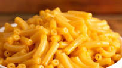

The Best Mac and Cheese

Description
Parents and children everywhere love Kraft. Don't tell your friends though, they may mock you for enjoying it.
Ingredients
- Pot with a lid.
- Box of Kraft Mac and Cheese.
- Water.
- Milk
- Butter
- Patience
Directions
- Obtain an appropriate sized pan and fill it with enough water to cover the noodles from the box.
- Then, salt the water to taste and bring the water to a boil.
- Once the water is boiling, place the noodles from the box into the water.
- Allow the noodles to cook until desired.
- Using a collander, drain the water from the pot and replace the noodles into the pot.
- Place an 8th of a stick of butter and a tablespoon of milk into the pot and mix.
- Finally, mix the powdered cheese in. If the cheese is too thick, add a little more milk.
- Enjoy!
Return to Home
Return to Top